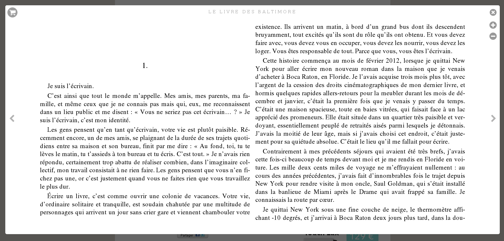
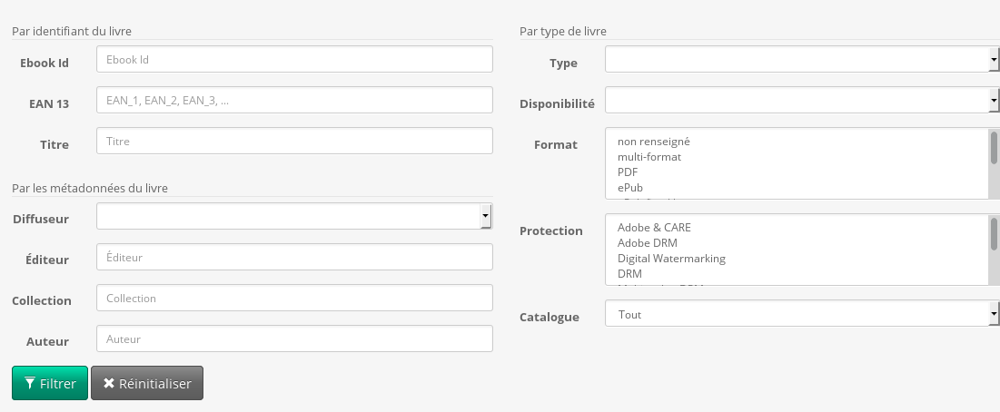

We want to …
… understand them ;
… easily express them ;
… reuse them ;
… compose them.
Tout d'abord, fixons nous quelques objectifs quand à ces règles métier.
En tant que développeur, je veux tout d'abord comprendre les règles qui me
seront énoncées par mon client, un expert du domaine ou un product owner.
La première étape dans l'implémentation passe donc bien évidemment par la
compréhension.
Vient ensuite le temps de l'expression. Une fois les règles métier acquises,
il faudra les ré-exprimer. Que ce soit dans de la documentation ou directement
dans du code applicatif, ces règles doivent être clairement retransmises. Aussi
bien au moment de l'implémentation initiale que pour la maintenance future du code
par d'autres développeurs, l'expression des règles métier doit être limpide.
Bien entendu, quelque soit la manière utilisée pour représenter ces règles au
sein de l'application nous aurons à coeur d'éviter leur duplication. Comme n'importe
quel bout de code, nos règles devront respecter toutes les bonnes pratiques du
développement logiciel.
Une fois chaque "règle unitaire" écrite, il faudra être capable de les composer
pour en créer de plus complexes. Par composition on entend simplement des
conjonctions de règles (ET logique), disjonctions (OU logique) et négations.
But… how do we do that?
Maintenant qu'on sait ce qu'on veut, comment on fait ?
Concrètement, dans notre code, comme tout ça va se traduire ?
Webreader

« A book supports the web reader if it's an ePub not protected by Adobe DRM »
Pour imager un peu plus mes propos, voyons concrètement comment implémenter une spécification.
Je travaille pour TEA - The Ebook Alternative, une entreprise qui édite une plateforme de vente
et distribution de ebooks. Parmi les fonctionnalités de la plateforme on retrouve un webreader
qui permet de lire certains ebooks directement dans le navigateur.
Nous allons tenter d'implémenter la règle qui indique si un livre donné peut-être ou non lu par
ce webreader. À savoir : « un livre peut être lu dans le webreader si c'est un ePub non protégé par Adobe DRM ».
Is a book viewable online?
class Book
{
const FORMATS_EPUB = ['epub', 'epub 3', 'epub fixed layout'];
public function isViewableOnline()
{
return in_array($this->getFormat(), self::FORMATS_EPUB)
&& $this->getProtection() !== 'adobe drm';
}
// …
}
Continuons sur les exemples.
Comment ferait-on pour vérifier si un livre donné est compatible
avec le webreader?
À priori on aurait tendance à ajouter dans la classe `Book` une
méthode qui ferait les vérifications.
Côté pouvoir expressif, on a l'impression que tout va bien.
La composition de plusieurs règles métier devra cependant se faire
ailleurs (livre compatible ET acheté par l'utilisateur courant ?).
Passons.
Repositories "à la Doctrine" ?
class DoctrineBookRepository implements BookRepository
{
public function add(Ebook $book) { }
public function remove(Ebook $book) { }
public function findByEan($ean) { }
public function findByTitle($title) { }
public function findPublished() { }
public function findViewableOnline() { }
public function findNotViewableOnline() { }
public function findPublishedAndViewableOnline() { }
// …
}
Autre exemple : comment ferait-on pour lister les livres
compatibles avec le webreader ? Les livres compatibles ET
publiés ? Les livres compatibles ET achetés par l'utilisateur
courant ?
Par des repositories "à la Doctrine" ?
Pas vraiment.
On encapsule bien la couche de stockage sous-jacente,
mais on a peu de pouvoir expressif, il est difficile de
combiner des critères et chaque nouvelle "requête" nécessite
l'écriture d'une méthode dans ce repository.
What does the Bible say?
“A Repository mediates between the domain and data mapping layers, acting like an in-memory domain object collection.
Client objects construct query specifications declaratively and submit them to Repository for satisfaction.”
Martin Fowler — http://martinfowler.com/eaaCatalog/repository.html
Bon, là on s’arrête, on réfléchit et on revient aux sources : le pattern repository.
On relit et on s’aperçoit qu’on a zappé une couche : les "query specifications".
What does the Bible say?
Specifications
Nous parlions tout à l'heure de design patterns que nous pouvions emprunter
à d'autres langages ou que nous faisions émerger.
Et bien il existe déjà un pattern pour la problématique de l'expression des règles
métier au sein d'une application : le pattern « Specification ».
C'est ce pattern et son utilisation qui va nous intéresser.
The specification pattern
“The central idea of Specification is to separate the statement
of how to match a candidate, from the candidate object that it is matched against.”
Martin Fowler — http://martinfowler.com/apsupp/spec.pdf
L'idée principale de ce pattern et de séparer la logique métier – les spécifications –
des objets sur lesquels appliquer la logique – les « candidats ».
Nous aurons donc deux classes distinctes : l'une contenant les données de notre application et
l'autre contenant une règle qui sera utilisable sur ces données.
A specification = a business rule
Specifications are composable
Une spécification permet donc d'exprimer une et une seule règle métier.
Chaque règle étant encapsulée dans une classe qui la représente.
Pour exprimer des règles plus complexes, les spécifications sont composables (ET, OU et NON).
Sample specification
class SupportsWebReader implements Specification
{
const FORMATS_EPUB = ['epub', 'epub 3', 'epub fixed layout'];
public function isSatisfiedBy($book)
{
return in_array($book->getFormat(), self::FORMATS_EPUB)
&& $book->getProtection() !== 'adobe drm';
}
}
« A book supports the web reader if it's an ePub not protected by Adobe DRM »
Le pattern Specification nous dit que notre règle métier sera représentée par une classe.
Chacune des spécifications que nous écrirons exposera une méthode "isSatisfiedBy" qui permettra
de déterminer si un objet donné - ici un livre - satisfait la spécification.
L'implémentation de cette méthode relève directement de la traduction de notre règle métier
en code.
Seulement, rien ne nous permet de composer cette spécification avec d'autres…
Sample specification
class SupportsWebReader implements Specification
{
const FORMATS_EPUB = ['epub', 'epub 3', 'epub fixed layout'];
public function isSatisfiedBy($book)
{
return in_array($book->getFormat(), self::FORMATS_EPUB)
&& $book->getProtection() !== 'adobe drm';
}
public function andX(Specification $spec)
{
return new AndSpecification($this, $spec);
}
public function orX(Specification $spec) { /* … */ }
public function not() { /* … */ }
}
« A book supports the web reader if it's an ePub not protected by Adobe DRM »
Pour ceci on a besoin de trois nouvelles méthodes qui seront les mêmes pour chacune des spécifications
que nous écrirons.
Usage
$spec = (new SupportsWebReader())
->andX(new AvailableInCountry('FR'))
->andX((new PublisherBlacklisted())->not());
$isViewableOnline = $spec->isSatisfiedBy($book); // bool(true)
Mais d'un autre côté l'utilisation et la composition est agréable à écrire et à relire.
Une spécification seule n'a que peu d'intérêt : la composition de plusieurs
spécifications permet d'exprimer des règles métier plus complexes.
On remarque qu'une spécification peut très bien être paramétrée.
N.B : la spécification ainsi obtenue représente une "vraie" règle utilisable dans la plateforme.
On peut imaginer qu'elle permet de tester si un livre peut être lu en ligne en france.
Pros …
Au point où on en est, on essaie de prendre un peu de recul et
d'analyser les avantages et inconvénients des spécifications quant
à l'expression de nos règles métier et leur utilisation dans l'application.
À priori, on respecte les principes SOLID et bonnes pratiques de développement.
On peut même isoler une règle métier fondamentale et l'implémenter de manière testable.
… & cons
could be clearer ;
only usable on a Book instance.
Mais l'expression de la règle métier pourrait être plus claire et
cette spécification n'est utilisable que sur un livre dont on a l'instance !
Comment pouvons-nous récupérer la liste des livres de notre catalogue qui sont
lisibles dans le webreader?
RulerZ
RulerZ, une bibliothèque que j'ai créé, se propose de résoudre ces deux problèmes que ne
résoud pas le pattern Specification originel.
Features
data-agnostic DSL to express business rules ;works at the instance level ;
works at the data-source level .
L'idée de RulerZ est simple : on garde nos spécifications mais on les exprime
à l'aide d'un DSL (proche du SQL) et surtout on les utilise **aussi** pour
récupérer les données satisfaisant ces spécifications.
La même spécification peut donc à la fois servir de manière "classique" pour tester un
objet donné mais aussi pour récupérer les objets la satisfaisant à partir d'une base
de données (via Doctrine, POMM, Eloquent, …), d'Elasticsearch, Solr, …
On évite ainsi la duplication de nos règles métier d'une part dans le code et d'autre part
dans les requêtes SQL.
Same rule
format IN :formats_epub AND protection != "adobe drm"
« A book supports the web reader if it's an ePub not protected by Adobe DRM »
Le DSL est simple, extensible, volontairement très proche du SQL (mêmes objectifs !)
et permet d'exprimer aisément nos règles métier.
On retrouve ici la règle écrite précédemment.
Same usage
$rule = 'format IN :formats_epub AND protection != "adobe drm"';
// use the textual rule
$isViewableOnline = $rulerz->satisfies($book, $rule, [
'formats_epub' => ['epub', 'epub 3', 'epub fixed layout'],
]); // bool(true)
L'utilisation est aussi simple qu'habituellement. On a d'un côté notre règle textuelle,
de l'autre l'objet à tester et on passe les deux à RulerZ. On obtient toujours en sortie
un booléen.
Same specification
class SupportsWebReader extends AbstractSpecification
{
public function getRule()
{
return 'format IN :formats_epub AND protection != "adobe drm"';
}
public function getParameters()
{
return [
'formats_epub' => ['epub', 'epub 3', 'epub fixed layout'],
];
}
}
« A book supports the web reader if it's an ePub not protected by Adobe DRM »
Bien entendu, travailler avec des objets représentant nos spécifications
permet de les tester et composer plus facilement qu'avec de simples chaines
de caractères.
Une specification ne fait qu'encapsuler une règle textuelle en les rendant testables
et en permettant de les réutiliser un peu partout dans la base de code.
Same usage
// build a specification object
$spec = (new SupportsWebReader())
->andX(new AvailableInCountry('FR'))
->andX((new PublisherBlacklisted())->not());
$isViewableOnline = $rulerz->satisfiesSpec($book, $spec); // bool(true)
Que ce soit avec une règle textuelle ou un object de spécification,
vérifier qu'un objet lui est conforme est toujours aussi facile.
Usage on a datasource
// our app uses Doctrine to query the database
$queryBuilder = $entityManager
->createQueryBuilder()
->select('book')
->from('Entity\Book', 'book');
// and we want to find the viewable online books
$viewableOnlineBooks = $rulerz->filterSpec($queryBuilder, $spec);
var_dump($viewableOnlineBooks); // array<Entity\Book>
Même règle ou spécification, mais cette fois on récupère des données
au lieu de vérifier la validité d'un objet qu'on a déjà.
Il est important de noter qu'à la place d'un QueryBuilder Doctrine,
on aurait pu utiliser Pomm, ou un client Elasticsearch pour aller
chercher les données ailleurs.
Une règle métier exprimée une seule fois dans le code permet donc de valider
un objet ou de retrouver tous les objets la validant. Plus de duplication !
En bonus, l'utilisations est aussi simple que pour un objet unique : la règle et
la source de données sont tout ce dont RulerZ à besoin.
A few use cases
Nous avons vu que RulerZ n'est qu'une implémentation du pattern Specification, même
si elle l'augmente considérablement en rajoutant une fonctionnalité de récupération de données.
Mais est-ce que c'est tout ce que RulerZ peut faire ?
Spoiler alert : nope !
Repositories – Before
class DoctrineBookRepository implements BookRepository
{
public function findByEan($ean) { }
public function findByTitle($title) { }
public function findPublished() { }
public function findViewableOnline() { }
public function findNotViewableOnline() { }
public function findPublishedAndViewableOnline() { }
// …
}
Doctrine les met en avant mais c'est une pratique répandue : les Repository
permettent d'isoler l'accès au données du reste de l'application.
Le soucis vient de l'explosion du nombre de méthodes à implémenter pour
permettre d'accéder aux données ... pas très SOLID !
Repositories – After
class DoctrineBookRepository implements BookRepository
{
public function matching(Specification $spec)
{
$qb = $this->createQueryBuilder('book');
return $this->rulerz->satisfiesSpec($qb, $spec);
}
}
Ce problème est résolu par l'utilisation conjointe des spécifications
et de RulerZ, dans une méthode matching.
Une méthode sachant retourner les données correspondant à une spécification,
des spécifications décrivant ces données, le tour est joué !
N.B : il faut bien entendu rester pragmatiques. Rien n'empêche d'avoir cette
méthode "matching" en conjonction d'autres méthodes plus "techniques" dont la
valeur ajoutée est faible en terme de métier (récupérer un objet par son identifiant
par exemple). L'utilisation de spécification doit se faire en priorité lorsque la
valeur métier le justifie.
Search forms
One field → One specification object
Face à un formulaire aussi massif que celui-ci et destiné uniquement à
filtrer des données on peut considérer chaque champ comme une "spécification".
En tirant parti (par exemple) du composant Form de Symfony on peut aisément
convertir chaque valeur saisie par l'utilisateur en son équivalent en spécification
et se reposer sur RulerZ pour tout ce qui concerne le filtrage des données.
Search forms
public function buildForm(FormBuilderInterface $builder, array $options)
{
// …
$builder->add('author', 'text', [
'spec_class' => Spec\Book\AuthorLike::class
]]);
}
Search forms
public function catalogAction(/* … */)
{
// …
if ($form->isValid()) {
$spec = new Spec\AndX(
array_filter($form->getData()) // remove empty fields/specs
);
$results = $this->booksRepository->matching($spec);
}
// …
}
Other use cases
e-commerce coupons / …
L'exemple classique des bons de réduction : un administrateur
peut saisir lui-même via une interface les conditions d'utilisation
d'un bon de réduction. Ces règles d'attributions permettront à la fois
de vérifier qu'un bon de réduction peut être utilisé par un client, mais
aussi d'être proactif et d'envoyer un mail aux clients concernés pour les
prévenir et les pousser à l'achat.